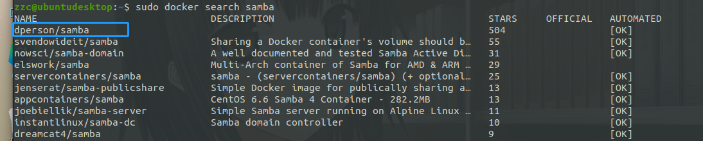

Docker 安装 Samba
镜像查找及拉取
查找镜像
sudo docker search samba
这个星星最多，就选这个吧

拉取镜像
sudo docker pull dperson/samba
运行
sudo docker run -d --name samba -p143:143 -p445:445 --restart always -v /home/samba:/mount dperson/samba \
-u "name;password" -s "file;/mount;no;no;no;Eric;none" -r
# -d：后台运行
# -p：将容器内部端口向外映射
# --name：命名容器名称
# -v：将容器内数据文件夹或者日志、配置等文件夹挂载到宿主机指定目录
# --restart always docker启动的时候自动启动
运行成功后出现一串字符串，容器已经在后台启动。
容器名字后面的参数是容器的参数，与docker无关；具体如下，请参考 GitHub
sudo docker run -it --rm dperson/samba -h
Usage: samba.sh [-opt] [command]
Options (fields in '[]' are optional, '<>' are required):
-h This help
-c "<from:to>" setup character mapping for file/directory names
required arg: "<from:to>" character mappings separated by ','
-G "<section;parameter>" Provide generic section option for smb.conf
required arg: "<section>" - IE: "share"
required arg: "<parameter>" - IE: "log level = 2"
-g "<parameter>" Provide global option for smb.conf
required arg: "<parameter>" - IE: "log level = 2"
-i "<path>" Import smbpassword
required arg: "<path>" - full file path in container
-n Start the 'nmbd' daemon to advertise the shares
-p Set ownership and permissions on the shares
-r Disable recycle bin for shares
-S Disable SMB2 minimum version
-s "<name;/path>[;browse;readonly;guest;users;admins;writelist;comment]"
Configure a share
required arg: "<name>;</path>"
<name> is how it's called for clients
<path> path to share
NOTE: for the default values, just leave blank
[browsable] default:'yes' or 'no'
[readonly] default:'yes' or 'no'
[guest] allowed default:'yes' or 'no'
NOTE: for user lists below, usernames are separated by ','
[users] allowed default:'all' or list of allowed users
[admins] allowed default:'none' or list of admin users
[writelist] list of users that can write to a RO share
[comment] description of share
-u "<username;password>[;ID;group;GID]" Add a user
required arg: "<username>;<passwd>"
<username> for user
<password> for user
[ID] for user
[group] for user
[GID] for group
-w "<workgroup>" Configure the workgroup (domain) samba should use
required arg: "<workgroup>"
<workgroup> for samba
-W Allow access wide symbolic links
-I Add an include option at the end of the smb.conf
required arg: "<include file path>"
<include file path> in the container, e.g. a bind mount
The 'command' (if provided and valid) will be run instead of samba
由于个人水平有限，文中若有不合理或不正确的地方欢迎指出改正